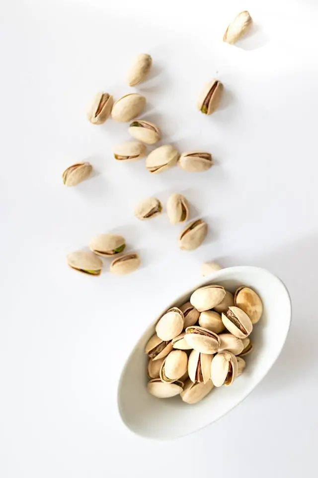
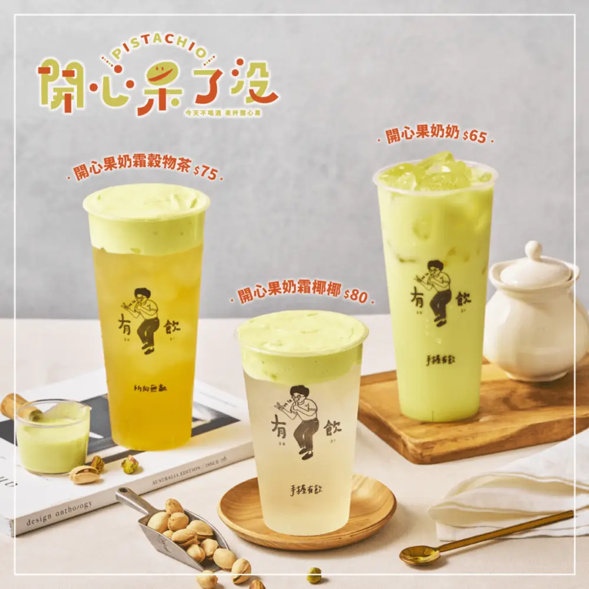
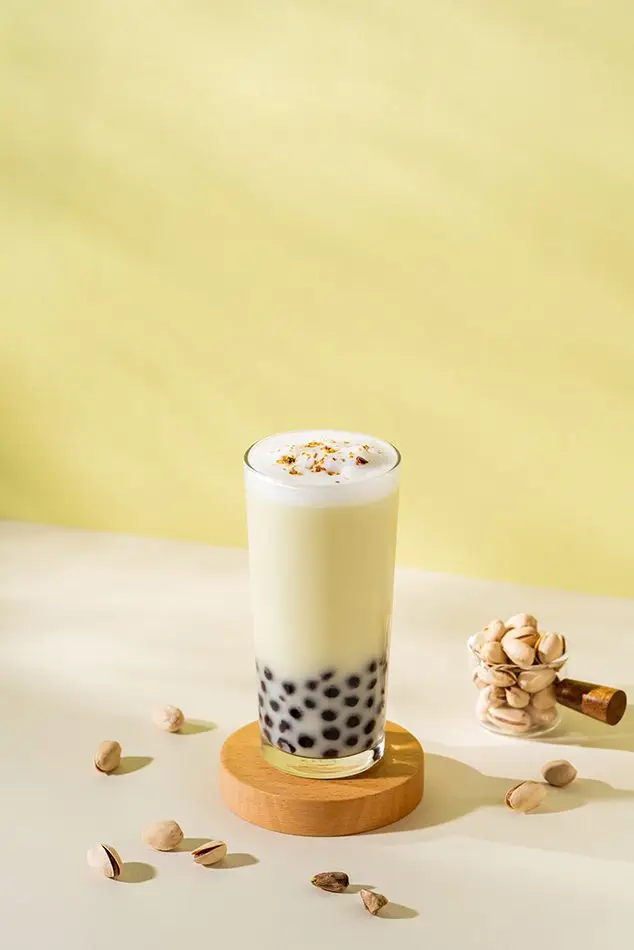

Articles / Recipes
How to make Pistachio bubble tea
2025-03-05 · New products, Recipes

Since springtime is just round the corner, it’s the best time to refresh your menus! Getting tired of the usual flavours? Why not try pistachio bubble tea?

Why Pistachio?
If you’ve been to a couple cafes, you’re probably no stranger to pistachio – this flavour has graced frappes, milkshakes and desserts alike!
Originating in Persia, pistachios have been used in desserts since ancient times, such as Halva, Turkish Delight and Persian Ice Cream.
It was then introduced to the Americas in the 19th century, and the USA soon became the world’s biggest grower of pistachios.
Thanks to a combination of lightly sweet yet savoury, nutty flavours, this nut has captured the taste buds of people worldwide. Much like the Chinese name “開心果”, it’s sure to bring a smile on everyone’s faces!
Pistachio bubble tea?
While most bubble tea trends usually spread from Taiwan outwards, this is a unique case of going the other way round!
Noticing the popularity of pistachio lattes and frappes, some bubble tea shops in the West started adding this flavour to their menus.
For example, It’s Boba Time and Bubbleology both introduced pistachio milk teas, while The Whale Tea had a range of drinks mixing the flavour with different tea brews.
Eventually some Taiwanese brands finally caught on the trend: Youin kicked things off last year with their limited-edition pistachio drinks, then other brands such as Odd One Out and even Wootea joined the fray.

How do you make it?
You can put down that grinder now – we make things easy for you with our new pistachio series! Featuring flavoured beverage mixes, cream tops and even camo powders, they’re perfect for mix-and-matching with different bases and toppings.

Pistachio milk tea
Enjoy the light fragrance of roasted nuts and rich creamy milk, with added caramel-y goodness from the tapioca pearls!
What you’ll need
How to make
Add 100g flavoured powder with 300g hot water to a shaker. Add ice cubes and shake.
Froth the milk to form a foam, then set aside.
Pour the drink mixture into a cup/glass, then add the tapioca pearls. Top with the milk foam, then enjoy!
Fancy a bit of crunch? Try adding some roasted pistachio crumbs onto the milk foam!
Give it a try!
Interested in adding this unique flavour to your bubble tea lineup?
Get in touch with us for samples!